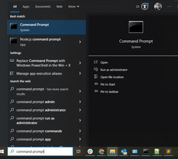
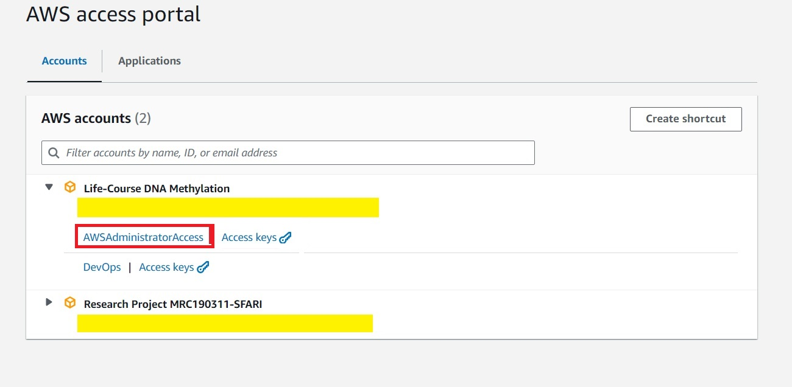

Web application using Django
This is a guide to developing a web application using Django followed by deployment on AWS Elastic Beanstalk.
The app can be access through www.isoforms.com.
Deployment
There are multiple platforms to host a website, such as DigitalOcean, Heroku etc. For the purpose of this site to ease database upload, we have chosen to use the AWS Elastic Beanstalk.
This will involve:
- Installation: setting up the Elastic Beanstalk command line interface (EB CLI) on Windows.
- Setting the Django app on Windows.
- Setting up the Elastic Beanstalk on Windows.
- Deployment
Setting up the Elastic Beanstalk command line interface (EB CLI)
Introduction
While the application can be configured and deployed directly on the AWS web, the command line through windows allows more flexilibty and version control with GitHub. A step-to-step guide from AWS can be found on create-deploy-python-django doc.
Installation
-
Install pre-requisite packages:
- Download python for Windows.
Important: Ensure to check "add to path" on pop-up window
- Download git for Windows.
-
Type command prompt on Windows search.

This will open a new Windows terminal.
-
In the terminal, install eb command line interface. On the command prompt, type:
pip install virtualenv git clone https://github.com/aws/aws-elastic-beanstalk-cli-setup.git python .\aws-elastic-beanstalk-cli-setup\scripts\ebcli_installer.py eb -
Install aws.
pip install awscli aws --version
Create django project and environment
On the Windows terminal:
-
In the destination folder, create and activate the environment:
# change directory to folder cd C:\Users\sl693\Dropbox\Scripts # create environment python -m venv isoVis_env # activate environment isoVis_env\Scripts\activate -
Install packages to run Django using pip (and any others for plotting etc)
# install Django pip install Django # others pip install django-import-export pip install pandas pip install matplotlib pip install seaborn pip install plotly -
Initiate the django project:
django-admin startproject isoVisDevNote: Here isoVisDev is the name of the project. Replace "isoVisDev" with the name of project.
This will create the following folder and structure:
isoVisDev ├───manage.py └───isoVisDev ├───asgi.py ├───settings.py ├───urls.py └───wsgi.py -
Create a requirements.txt (for installing the environment on AWS). The requirements.txt lists all the packages installed in the environment.
cd isoVisDev python manage.py runserver pip freeze > requirements.txtThe requirements.txt will be in the isoVisDev folder as shown in the tree structure below:
isoVisDev ├───manage.py ├───requirements.txt └───isoVisDev -
Create a configuration file for django in the .ebextensions folder.
mkdir .ebextensions deactivateManually create the djang.config and copy the following text in the file:
option_settings: aws:elasticbeanstalk:container:python: WSGIPath: isoVisDev.wsgi:applicationImportant: Ensure that the WSGIPath is updated to the name of the app (isoVisDev.wsgi refers to the wsgi.py script in the isoVisDev folder) Note the updated folder structure:
isoVisDev ├───manage.py ├───requirements.txt ├───.ebextensions │ └───django.config └───isoVisDev
Initiate the Elastic Beanstalk application
-
Connect to AWS through command prompt by copying the AWS window access paths.
SET AWS_ACCESS_KEY_ID=<aws_access_key_id> SET AWS_SECRET_ACCESS_KEY=<aws_secret_access_key> SET AWS_SESSION_TOKEN=<aws_session_token>Note: The AWS access keys update every now and then, so need to copy the access keys frequently and paste into the Windows command prompt.
-
Use the administrative access if possible.

-
Copy the keys from the Windows tab, under Option 1.

-
-
Set up the eb platform.
eb platform select Select a platform. 1) .NET Core on Linux 2) .NET on Windows Server 3) Docker 4) Go 5) Java 6) Node.js 7) PHP 8) Packer 9) Python 10) Ruby 11) Tomcat (make a selection): 9 # Python Select a platform branch. 1) Python 3.11 running on 64bit Amazon Linux 2023 2) Python 3.9 running on 64bit Amazon Linux 2023 3) Python 3.8 running on 64bit Amazon Linux 2 4) Python 3.7 running on 64bit Amazon Linux 2 (Deprecated) (default is 1): 1 -
Initiate the Elastic Beanstalk application, which creates a config.yml.
eb init -p python-3.11 isoVisDevNote: Ensure that the region is correct (matching with region stated in the AWS web) in the config.yml
The config.yml is created in the .elasticbeanstalk folder.
isoVisDev ├───manage.py ├───requirements.txt ├───.ebextensions | ├───django.config ├───.elasticbeanstalk | ├───config.yml └───isoVisDevAnd the content of the config.yml:
branch-defaults: default: environment: isoVisDev group_suffix: null main: environment: isoVisDev global: application_name: isoVisDev branch: null default_ec2_keyname: null default_platform: Python 3.11 default_region: eu-north-1 # change this region include_git_submodules: true instance_profile: null platform_name: null platform_version: null profile: null repository: null sc: null workspace_type: Application -
Create Elastic Beanstalk environment to run application.
eb create isoVisDev-env --region eu-north-1 eb statusNote: This creates the isoVisDev-env. Replace this with the name of environment to create.
Verifying Deployment
via EB-CLI
The status of the Elastic Beanstalk environment can be checked on the windows terminal:
> eb list
Environment details for: isoVis-env
Application name: isoVisDev
Region: eu-north-1
Deployed Version: app-1fe2-240926_180444424798
Environment ID: e-dqvv825srf
Platform: arn:aws:elasticbeanstalk:eu-north-1::platform/Python 3.11 running on 64bit Amazon Linux 2023/4.0.11
Tier: WebServer-Standard-1.0
CNAME: isoVis-deploy-env.eba-r7r9zsja.eu-north-1.elasticbeanstalk.com
Updated: 2024-09-26 17:23:17.866000+00:00
Status: Ready
Health: Grey
Alert: The platform version that your environment is using isn't recommended. There's a recommended version in the same platform branch.
The list of environments can be checked with:
> eb list
* isoVis-env # showing that we are using this environment
isoVis2-env
To switch environments:
> eb use isoVis2-env
> eb list
isoVis-env
* isoVis2-env
To open the application on the platform:
> eb open
via AWS web
-
Log into AWS, and click on rather than . 
-
Search for Elastic Beanstalk on the opened AWS web.

-
This will open up the applications and environments initiated. Hopefully, the application and environment created is listed.

-
Click on the application, and the domain to open the application.

Change Domain name
While the application is successfully deployed, the domain name will be some long string of letters (for example: isoVis-deploy-env.eba-r7r9zsja.eu-north-1.elasticbeanstalk.com).
To change the name of the domain with a bought domain name (i.e. from GoDaddy), Route53 is used for DNS routing.
Set up Route 53 on AWS
-
Search for Route 53 app on AWS web.

-
Click on the on the left-hand side tab of Route 53, and click on .

-
This will bring a pop-up window. Type in the domain name of interest in the
Note: isoforms.com is the bought name from GoDaddy. Click .
-
This will take you back to the screen with the . Click on the domain created, which will bring you to this page.
Important: The Name server listed here needs to be copied and added to the GoDaddy domain.
-
To link the Elastic Beanstalk application with the nameserver, click on .
-
This will bring up another page. Select , click .

-
Click .

-
This will bring up another pop-up page.
- Keep the subdomain blank.
- Select A - Routes traffic to an IPv4 address and some AWS resources under .
- Select Alias to Elastic Beanstalk enviroment under .
- Select the region that the environment was created (in this case, eu-north-1).
- The Elastic Beanstalk environment created shoud be listed.
- Click on .
-
Depending on the application size, this can take up to a few hours for the DNS nameserver to update.
Change nameservers on GoDaddy
The nameservers listed on AWS need to be copied on the GoDaddy domain. A step-to-step guide to do this can be found on this video or document.
Django Development
As described in the Deployment section, a simple Django project structure is created with:
django-admin startproject isoVisDev
Following the steps to deploy the application AWS successfully, the following tree structure should be as of follows:
isoVisDev/
├── manage.py
├── requirements.txt
├── .ebextensions/
│ └── django.config
├── .elasticbeanstalk/
│ └── config.yml
└── isoVisDev/
├── asgi.py
├── settings.py
├── urls.py
└── wsgi.py
Guide
This next section is a guide to create a more functioning Django application:
- covering the basic folder structure for live rendering
- creating a basic homepage and two tabs
- interactive widgets and filtering using a SQLite database
- plotting with python and Rscripts
Basic commands
python manage.py runserver.
python manage.py makemigrations
models.py. Version control of the changes are documented in the migrations folder.python manage.py makemigrations expression
models.py for a tab within the app, named expression.python manage.py migrate
python manage.py makemigrations and applies the migrations to the database, effectively updating the database schema to match current models.python manage.py <python.script>
python script, which may upload a csv file to the database Cheatsheet
Modify text in homepage - change the home.html.
Project Overview
The overarching settings and urls are noted in the settings.py and urls.py in the app (in this case, isoVisDev) subfolder.
isoVisDev/
|
├── manage.py
|
└── isoVisDev/
|
├── asgi.py
|
├── settings.py # overview settings
|
├── urls.py # overview urls
|
└── wsgi.py
These two files need to be configured correctly before developing the project.
Base structure and style
To generate the base structure (i.e. the tabs and individual pages) and set-up the design, create a new folder called , and generate two files in the folder (base.html and home.html):
isoVisDev/
|
├── manage.py
|
└── isoVisDev/
| |
| ├── asgi.py
| |
| ├── settings.py # overview settings
| |
| ├── urls.py # overview urls
| |
| └── wsgi.py
|
└── templates
|
├── base.html
|
└── home.html
Project settings
The settings.py file holds the configuration settings for the Django application, and only needs to be configured at the start of the project.
While the django-admin will create the basic template of the file, there are a few things that need to be updated accordingly:
-
Allowed Hosts
ALLOWED_HOSTS: A list of strings representing the host/domain names for the Django app.
Note: This is empty in the template, and needs to include the Elastic Beanstalk domain and the preferred domain name.
ALLOWED_HOSTS = ['isoforms.com','www.isoforms.com','127.0.0.1','isoVis-deploy-env.eba-r7r9zsja.eu-north-1.elasticbeanstalk.com'] -
Apps
INSTALLED_APPS: A list of the sub-applications created (i.e expression here), and third-party apps
Note:
expression.apps.expressionConfig: needs to be anapp.pyin theexpressionfolder.INSTALLED_APPS = [ #### In template 'django.contrib.admin', # Built-in admin interface 'django.contrib.auth', # Authentication framework 'django.contrib.contenttypes', # Content type framework 'django.contrib.sessions', # Session framework 'django.contrib.messages', # Messaging framework 'django.contrib.staticfiles', # Static file handling ### Added by user # Your custom app 'expression.apps.expressionConfig', # Third-party app for REST APIs 'import_export', ] -
Language and Time Zone
Update this to the language and time zone as appropriate.
LANGUAGE_CODE = 'en-gb' TIME_ZONE = 'Europe/London'
Templates
The templates folder creates the backbone of the dynamic HTML pages. There are two files:
isoVisDev/
├── manage.py
└── isoVisDev/
| ├── asgi.py
| ├── settings.py
| ├── urls.py
| └── wsgi.py
└── templates
├── base.html # file 1
└── home.html # file 2
base.html
The code below in the base.html is used to create the style and tabs:

{% raw %}
<!DOCTYPE html>
<html lang="en">
<head>
<meta charset="utf-8">
<meta name="viewport" content="width=device-width, initial-scale=1">
<link href="https://cdn.jsdelivr.net/npm/bootstrap@5.1.3/dist/css/bootstrap.min.css" rel="stylesheet">
<!-- INSERT ADITIONAL INFORMATION TO THE HEAD TAG HERE-->
{% block head %}
{% endblock%}
</head>
<body>
<!-- BOOTSTRAP NAVBAR CODE -->
<nav class="navbar navbar-expand-lg navbar-dark bg-dark">
<div class="d-flex justify-content-between px-5 mx-auto" style="width: 90%;">
<span class="navbar-text text-white">Long-Read Brain Transcriptome Dataset</span>
<ul class="navbar-nav mr-auto">
<li class="nav-item active">
<a class="nav-link active" href="{% url 'home' %}">Home</a>
</li>
<li class="nav-item active">
<a class="nav-link active" href="{% url 'expression:summary' %}">Summary</a>
</li>
<li class="nav-item active">
<a class="nav-link active" href="{% url 'expression:transcript' %}">Transcript Level</a>
</li>
</ul>
</div>
</nav>
<!-- END OF NAVBAR CODE-->
<div class="container-fluid mt-5" style="max-width: 80%">
<!-- INSERT THE CONTENT FROM SPECIFIC PAGES HERE-->
{% block content %}
{% endblock %}
</div>
<script src="https://cdn.jsdelivr.net/npm/bootstrap@5.1.3/dist/js/bootstrap.bundle.min.js"></script>
</body>
</html>
{% endraw %}
To create a new tab (i.e Contact), include the code with appropriate indentation:
{% raw %}
<li class="nav-item active">
<a class="nav-link active" href="{% url 'contact' %}">Contact</a>
</li>
{% endraw %}
The contact.html then needs to be placed in the same templates folder.
Note:
expresion:summaryandexpression:transcriptmeans that thesummary.urlandtranscript.urlare placed in theexpression\urlsfolder, and those sites will be accessed through wwww.isoforms.com\expression\summary and www.isoforms.com\expression\transcriptsummary`
home.html
The code below in the home.html is used to create the homapage.

{% raw %}
{% extends 'base.html' %}
{% block content %}
<h1>Long read brain transcriptome dataset</h1>
<br>
We used long-read transcriptome sequencing to characterise the structure and abundance of full-length transcripts in the human cortex from donors aged 6 weeks post-conception to 83 years old. We identified thousands of novel transcripts, with dramatic differences in the diversity of expressed transcripts between prenatal and postnatal cortex. A large proportion of these previously uncharacterised transcripts have high coding potential, with corresponding peptides detected in proteomic data. Novel putative coding sequences are highly conserved and overlap de novo mutations in genes linked with neurodevelopmental disorders in individuals with relevant clinical phenotypes. Our findings underscore the potential of novel coding sequences to harbor clinically relevant variants, offering new insights into the genetic architecture of human disease. Our cortical transcript annotations are available as a resource to the research community via an online database
<br>
<br>
<br>
Please refer to <a href="https://www.biorxiv.org/content/10.1101/2024.09.09.612016v1"> Bamford et al. 2024 </a> and the
<a href="https://genome.ucsc.edu/cgi-bin/hgTracks?db=hg38&lastVirtModeType=default&lastVirtModeExtraState=&virtModeType=default&virtMode=0&nonVirtPosition=&position=chr6%3A105273218%2D105403082&hgsid=2355395487_u493yeIu7Ry5BcMRNmxfUqkeKryA"> transcripts detected on UCSC Genome Browser</a>.
{% endblock %}
{% endraw %}
Project urls
The project urls.py list routes URLs to views.
# urls.py
from django.contrib import admin
from django.urls import path, include
from expression import views
urlpatterns = [
path('', views.home, name='home'),
path('admin/', admin.site.urls),
path('expression/', include('expression.urls'))
]
Description
from django.contrib import admin This imports the Django admin module to create the interfance for managing application's data.
urlpatterns[]
List of all the URL patterns for Django application, i.e. isoforms.com, isoforms.com\admin, isoforms.com\expression
path('expression/', include('expression.urls'))
Includes additional URL patterns from the expression.urls module (listed in the expression\urls.py)
NOTE: Important to update the urlpatterns everytime a new module/sub-folder is added.
Adding new module
If adding a new module called Structure, the new urls.py would be:
# urls.py
from django.contrib import admin
from django.urls import path, include
from expression import views
urlpatterns = [
path('', views.home, name='home'),
path('admin/', admin.site.urls),
path('expression/', include('expression.urls')),
path('structure/', include('structure.urls'))
]
Add module
To create a module or app within the Django application, i.e www.isoforms.com/expression/, a separate folder called expression needs to be created in the main folder, with all the other template htmls.
To integrate this to the existing Django application:
-
Open the Windows command prompt and change directory to the project folder.
-
Create the module
expressioncd C:\Users\sl693\Dropbox\Scripts\isoVisDev python manage.py startapp expressionThis command will create the following structure:
isoVisDev/ └── expression/ ├── migrations/ ├── __init__.py ├── admin.py ├── apps.py ├── models.py ├── tests.py └── views.py -
Link the module to the Django app The module needs to be registered in the
settings.pyandurls.pyin the main folder.isoVisDev/ ├── manage.py └── isoVisDev/ ├── asgi.py ├── settings.py # modify this ├── urls.py # modify this └── wsgi.py └── expression/ ├── migrations/ ├── __init__.py ├── admin.py ├── apps.py ├── models.py ├── tests.py └── views.pyIn the settings.py, add the module to the INSTALLED_APPS, as described here.
In the urls.py, include the urls to the urlpatterns, as described here.
-
Modify the views.py Add the below to the
view.py. The www.isoforms.com/expression will automatically direct to thehome.htmlpage defined in the main app.# expression/views.py from django.shortcuts import render, redirect, get_object_or_404 from django.http import JsonResponse from django.urls import reverse def home(request): return render(request, 'home.html') -
Create other pages within this module Create a new file called
urls.pyand define the other url paths:from django.urls import path from . import views app_name = 'expression' urlpatterns = [ path('', views.summary, name='main'), path('summary/', views.summary, name= 'summary'), path('transcript/', views.transcript_identify, name= 'transcript') ]Notes:
- The module name here is called
expression. - the
views.summaryrefers to thedef summary()in theexpression/view.py, which can be accessed with www.isoforms.com/expression.summary
- The module name here is called
-
Run migrations
Finalise the module, by typing the following in the Windows terminal:
cd C:\Users\sl693\Dropbox\Scripts\isoVisDev python manage.py makemigrations expression python manage.py migrate
Add files to database
In most uses of a web application, we will need to have a database where we can retrieve information. This is stored in the form of a SQLite database (db.sqlite3), which is referred in the DATABASES in the settings.py.
The database can either be populated using the Django admin site or directly through the app by loading csv/txt files, as guided below:
Set up
-
Deposit the
.csvfile in the apps folder, within thefilesdirectory (need to create directory). -
Create a
.pyscript to load the csv file, withinmanagement\commandsdirectory (need to create directories).An example of the folder structure:
isoVisDev/ ├── manage.py └── expression/ └── files/ └── whole_gene_counts.csv # deposit this csv file here ├── management/ └── commands/ └── load_gene_counts.py # create this script ├── migrations/ ├── __init__.py ├── admin.py ├── apps.py ├── models.py ├── tests.py └── views.pyIn the
load_gene_counts.pyscript:from csv import DictReader from django.core.management import BaseCommand # Import the model from expression.models import Genecounts class Command(BaseCommand): # Show this when the user types help help = "Loads data from whole_genecounts.csv" def handle(self, *args, **options): # Show this before loading the data into the database print("Loading gene counts data") #Code to load the data into database for row in DictReader(open('./expression/files/whole_genecounts.csv')): Genecount=Genecounts(sampleID=row['sampleID'], geneName=row['geneName'], counts=row['counts'], group=row['group'], sex = row['sex']) Genecount.save() def __str__(self): return self.title